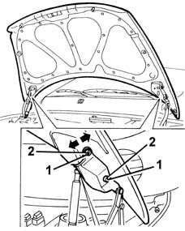
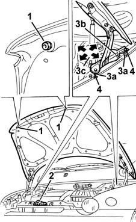
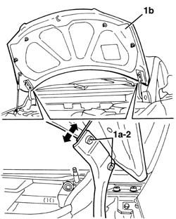
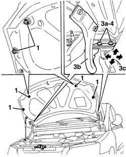

7025A10 BONNET LID - SQUARE
- Path
- Procedures > 70 FITTINGS > 7025 COMPARTMENT LIDS > 7025A LOCATION OF BONNET WIND NOISE > 7025A10 BONNET LID - SQUARE
- Kind
- repair procedure (removal / refitting; the operation number is the code)
- Applies to
- all engines; all production periods
- Interactive page
- https://sloeber94.github.io/elrnDB-fMltpl/en/#/2892130
Applies to: all engines; production: fino a 05/99, da 09/03, da 06/99 a 03/02, da 04/02 a 08/03, fino a 05/04
Lift the bonnet and support it in an appropriate manner.
1. Slacken the hinge bolts and adjust the bonnet position.
The arrows indicate possible movements.
2. Tighten the bolts.

Applies to: all engines; production: fino a 05/99, da 09/03, da 06/99 a 03/02, da 04/02 a 08/03, fino a 05/04
1. Adjust buffer blocks if necessary.
2. If necessary adjust the catch position.
Op. 7025A34 BONNET LID LOCK (ONE) - R+R OR REPAIR
.
If the adjustments described above are insufficient, adjust bonnet lid hinge position as described below.
Op. 7055B42 LH OR RH REFLECTOR(ONE) ON REAR BUMPERS - R R
.
3. Slacken the nuts (3a) securing the hinges (3b) and adjust the position until the bonnet is aligned. Arrows (3c) indicate possible movements.
4. Tighten the nuts.
Touch up the paintwork in the hinge area.

Applies to: all engines; production: da 06/04
Lift the bonnet and support it.
1. Loosen the bolts (1a) for the hinges and adjust the position of the bonnet (1b).
The arrows indicate the possible movements.
2. Tighten the bolts.

Applies to: all engines; production: da 06/04
1. If necessary, adjust the buffers.
2. If necessary, adjust the position of the lock.
Op. 7025A34 BONNET LID LOCK (ONE) - R+R OR REPAIR
Op. 7210E22 WINDSCREEN BASE TRIM
If the adjustments indicated in the previous points are insufficient, adjust the position of the bonnet hinges as described below.
3. Loosen the bolts (3a) fixing the hinges (3b) and adjust the position until the bonnet is aligned. The arrows (3c) indicate the possible movements.
4. Tighten the bolts.
Repaint the area of the hinges.

Topics linked from this page (3)
- 7025A34 bonnet lid lock (one) - r+r or repair
- 7055B42 Additional FRONT WHEEL ARCH (one), left or right - R.R.
- 7210E22 WINDSCREEN BASE TRIM